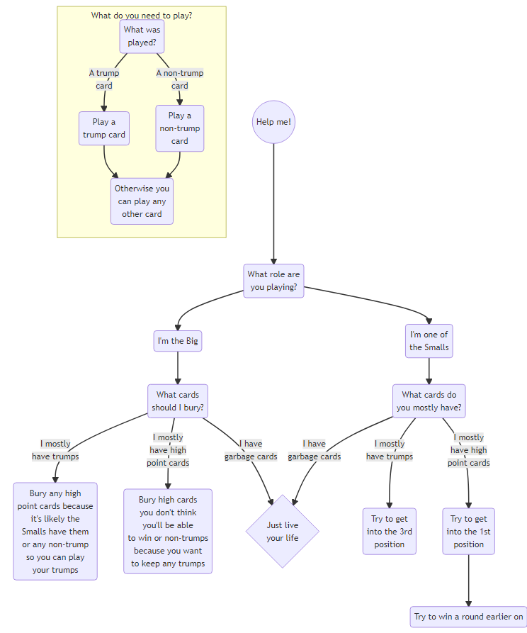

Zole
I’ll be using the following shorthand in this document:
| 1/Ace | A |
| King | K |
| Queen | Q |
| Jack | J |
What is zole?
This is a 3-player1 Latvian trick-taking card game. The official rules and terminology were published by the Latvian Zole Game Federation in 1996.
The Goal
You or your team want to win the most amount of points.
Below is a list of what each card is valued at:
| Card | Value |
|---|---|
| A | 11 |
| 10 | 10 |
| K | 4 |
| Q | 3 |
| J | 2 |
| <9 | 0 |
If you’re the Big you want to win 61+ points and if you’re the Small team you want to win 60+ points. The total amount of winnable points is 120. Find out more information about roles of the Big and the Smalls here.
Set-up
This game requires a normal playing deck minus several cards. Keep only the following cards of all suits: 7, 8 ,9, 10, J, Q, K, A. This means a game will only consist of 8 * 4 = 32 cards.
Dealing
Deal out 10 cards to each player with 2 cards in the middle, faced down.
Since there are so few cards, shuffling is very important to avoid cards sticking together. Once the cards are shuffled, the player on the right needs to cut the deck.
You have the dealer, the first person left of the dealer (Player 1 or P1), and the player right of the dealer (Player 2 or P2).
You deal clockwise in the following order:
- [2 to P1, 2 to P2 & 2 to the dealer] * 2
- Deal 2 to the centre
- [2 to P1, 2 to P2 & 2 to the dealer] * 2
Now that the cards are dealt, the roles have to be determined.
How to play
Roles
You can play one of two roles:
- Big
- Small
The Smalls team up together against the Big (i.e., 2 vs. 1).
Ideally, if you think you can win on your own you take the role of the Big; otherwise you take the role of one of the two Smalls.
Starting to the left of the dealer, P1 will decide if they will take on the role of Big. If they decline then it goes to P2 and if P2 declines it goes to the dealer. Once someone decides to be the Big then the roles are determined for that round. A playe signals that they have decided to be the Big if they collect the 2 cards in the centre. This player starts the game by adding 2 cards from their hand into their points pile, facedown.
Playing
Like most trick-taking games, the play is determined by the first action. Therefore, if the first player puts down a trump then all players must follow suit, unless they are unable and in which case they can play any card. Whoever wins the trick gets to start off the next one and so on and so forth until all cards are played. If you win a trick then you get to collect those cards that were played. The Big has their own points and the Smalls pool their points together. Once all cards have been played then you collect and count your points.
Flowchart

Types of cards
Below is a list of the trumps cards, ranked in order of strength:
| # | Card | Suit |
|---|---|---|
| 1 | Q | Club |
| 2 | Q | Spade |
| 3 | Q | Heart |
| 4 | Q | Diamond |
| 5 | J | Club |
| 6 | J | Spade |
| 7 | J | Heart |
| 8 | J | Diamond |
| 9 | 10 | Diamond |
| 10 | A | Diamond |
| 11 | K | Diamond |
| 12 | 9 | Diamond |
| 13 | 8 | Diamond |
| 14 | 7 | Diamond |
This order isn’t a commonly seen order; note that the K is lower than the 10!
All other cards are non-trump.
Below are the non-trump cards, ranked in order of strength:
| # | Card |
|---|---|
| 1 | 10 |
| 2 | K |
| 3 | 9 |
| 4 | 8 |
| 5 | 7 |
This applies to all clubs, all spades, and all hearts (minus Q & J).
Things to consider
You typically take this role if you feel like you can win against the other 2 players. You’ll probably want to take this role if you have the higher trumps.
Ideally, you want to sandwich the Big. This is so one player can set the stage, the Big plays, and the second Small can react.
Fun phrases
This section is a work in progress!
| Latvian | English |
|---|---|
| Butter the bread | |
Reference
| Card | Value |
|---|---|
| A | 11 |
| 10 | 10 |
| K | 4 |
| Q | 3 |
| J | 2 |
| <9 | 0 |
Below is a list of the trumps cards, ranked in order of strength:
| # | Card | Suit |
|---|---|---|
| 1 | Q | Club {{< fa clover >}} |
| 2 | Q | Spade {{< fa spoon >}} |
| 3 | Q | Heart {{< fa heart >}} |
| 4 | Q | Diamond {{< fa diamond >}} |
| 5 | J | Club {{< fa clover >}} |
| 6 | J | Spade {{< fa spoon >}} |
| 7 | J | Heart {{< fa heart >}} |
| 8 | J | Diamond {{< fa diamond >}} |
| 9 | 10 | Diamond {{< fa diamond >}} |
| 10 | A | Diamond {{< fa diamond >}} |
| 11 | K | Diamond {{< fa diamond >}} |
| 12 | 9 | Diamond {{< fa diamond >}} |
| 13 | 8 | Diamond {{< fa diamond >}} |
| 14 | 7 | Diamond {{< fa diamond >}} |
Below are the non-trump cards, ranked in order of strength:
| # | Card |
|---|---|
| 1 | 10 |
| 2 | K |
| 3 | 9 |
| 4 | 8 |
| 5 | 7 |
Footnotes
You can play this game with up to 5 people but if you have more than 3 players then the remaining players have sit out for a round.↩︎